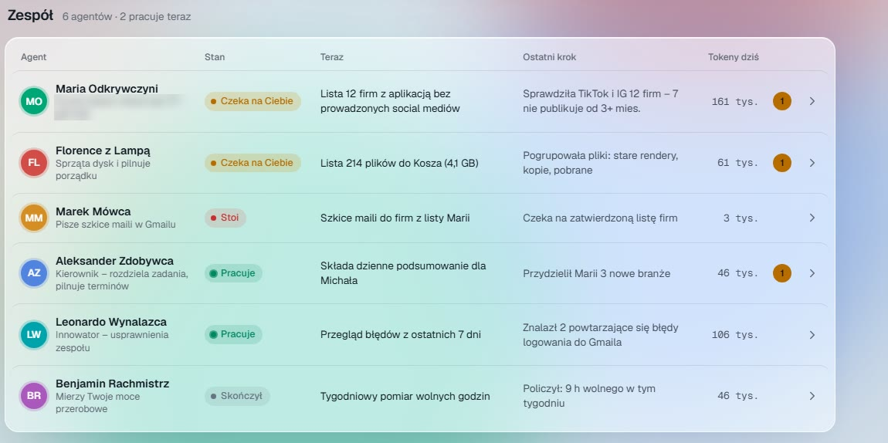
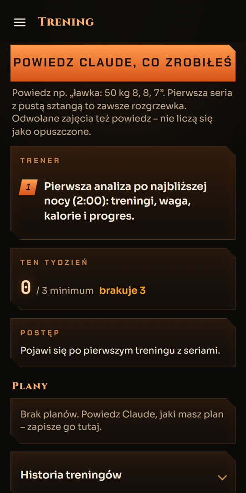
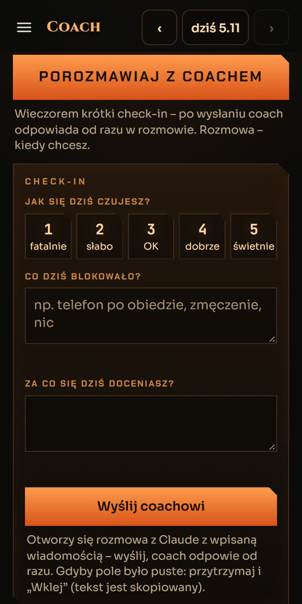
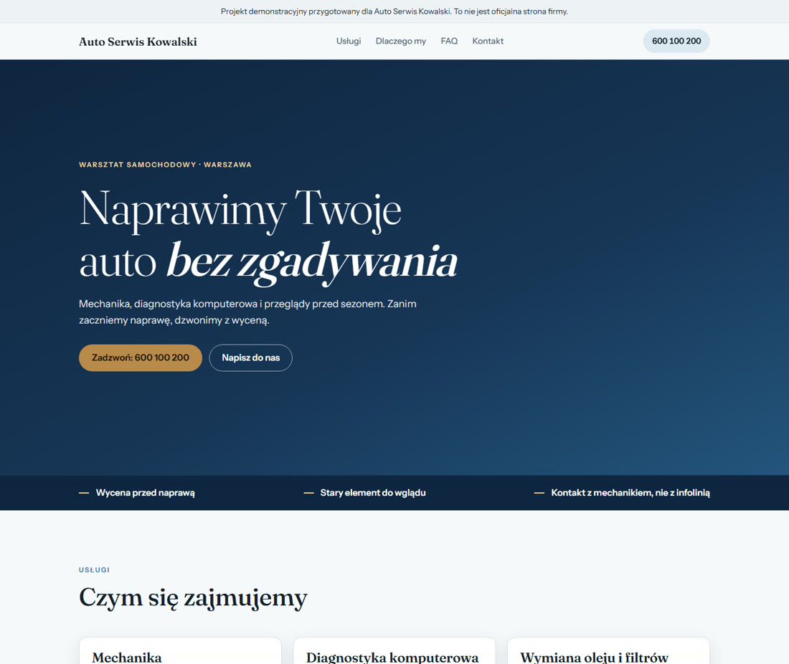

Montaż do Premiere
- WCHODZI
- nagranie i scenariusz
- WYCHODZI
- projekt Premiere z warstwami: cięcia co do zdania, b-rolle, animacje, dźwięki z własnej biblioteki (512 plików)
Projekt otwieram w Premiere i dopracowuję ręcznie.
Filmy, które piszę i montuję, oraz narzędzia, agenci i aplikacja, które zbudowałem w Claude Code, żeby robić je szybciej i lepiej. Same prace, bez oferty.
21 filmów z dwóch branż: skecze, POV, memy, reklamy sprzedażowe, animacje i explainery. Najedź, żeby zobaczyć ruch. Kliknij, żeby obejrzeć całość z dźwiękiem.
Prowadzę konto od 07/2025: piszę, nagrywam, montuję. 230 filmów, 15,6 mln wyświetleń na TikToku, najlepszy 1,2 mln. odczyt 18.11.2026
Filmy bez twarzy, które w 20 sekund pokazują usługę: animacja ekranu aplikacji, lektor, napisy. Osobne wersje pod różne miasta.
Od 05/2026 jako Content & Social Media Specialist. Zdrowie tłumaczone tak, żeby widz nie przewinął: animowana postać lekarza, postać 3D, explainery z twarzą, reklamy.
Od tego się zaczęło: zanim robiłem filmy dla firm, zbudowałem własne konto na TikToku do 80 tys. obserwujących i 146 mln wyświetleń, bez budżetu i bez zespołu. stan 18.11.2026
Zbudowałem je w Claude Code: opisuję, co ma się dziać, i sprawdzam wynik na prawdziwych filmach. Każde zdejmuje ze mnie jeden powtarzalny krok, więc więcej czasu zostaje na pomysł i montaż.
Projekt otwieram w Premiere i dopracowuję ręcznie.
Napisy nie łamią nazw i pytań w pół zdania.
87 pomiarów krzywych widzów z 3 kont.
888 filmów i reklam rozłożonych na powtarzalne wzorce.
| Element | Co widać |
|---|---|
| Hook 0–3 s | pytanie do widza i zbliżenie na telefon |
| Tempo | cięcie co 1,5 s, zero pauz |
| Produkt | ekran aplikacji dopiero w 8. sekundzie |
| Do wzięcia | ekran wcześniej, w 3. sekundzie |
66 gotowych klocków animacji.
Fakty w filmie sprawdzam na nowo w źródle przed każdą publikacją.
Agenci AI z imionami i rolami. Pracują w tle według harmonogramu, a każdą decyzję, która coś zmienia, zostawiają mi do kliknięcia „Tak” albo „Nie” w panelu. Panel działa na komputerze i na telefonie.


Przyjmuje zlecenia, rozdziela je między agentów i pilnuje terminów. Codziennie o 21:00 daje mi jedno podsumowanie dnia.
działaSprząta dysk po pracy czatów. 18.11 przeniosła do Kosza 12 666 plików (3,26 GB), dopiero po mojej akceptacji listy. Teraz co niedzielę.
działaPrzyjmuje zlecenia wysłane z telefonu i odsyła powiadomienia na iPhone’a, gdy coś czeka na moją decyzję.
test udany 19.11Szuka firm z aplikacją albo usługą dla klientów, które nie prowadzą social mediów, i ocenia każdą w skali 0–10.
wstrzymanaRaz w tygodniu przegląda błędy i przestoje zespołu i proponuje od 1 do 3 usprawnień z liczbą, po której poznamy efekt.
w przygotowaniuCo poniedziałek liczy z kalendarza, ile naprawdę mam wolnych godzin w tygodniu.
w przygotowaniuRzeczy, które dzieją się same o stałej porze. Zostawiają wynik w miejscu, do którego i tak zaglądam: w arkuszu, aplikacji albo powiadomieniu.
Zbiera krzywe utrzymania widzów z kont, które prowadzę, i dokłada je do historii. Z tego korzysta pętla retencji.
87 pomiarów, 3 konta
Sprawdza, co naprawdę wyszło na TikToka, uzupełnia arkusz publikacji o tytuły, daty i linki i planuje kolejne filmy na dni robocze.
W nocy analizują treningi, jedzenie i plan dnia, a rano zostawiają w aplikacji propozycje i menu na dzień.
Aplikacja na telefon do planu dnia: jedzenie, treningi, zakupy, cele i asystent. Nie trzeba wypełniać formularzy: mówię normalnie, co zrobiłem, a Claude zapisuje i liczy. Wieczorem coach pyta, jak minął dzień.





zrzuty z wersji testowej, przykładowe dane
System, który z kilku informacji o firmie składa gotową stronę: usługi, cennik, opinie, kontakt, wersja na telefon. Powstało 11 stron pokazowych dla warsztatów, hydraulików, fizjoterapeutów i salonów.



nazwy firm i numery telefonów na zrzutach są fikcyjne